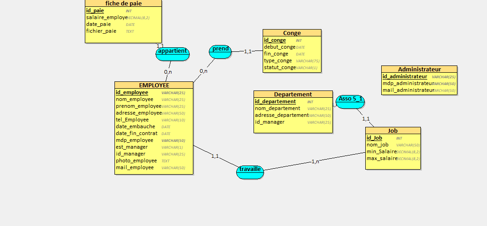
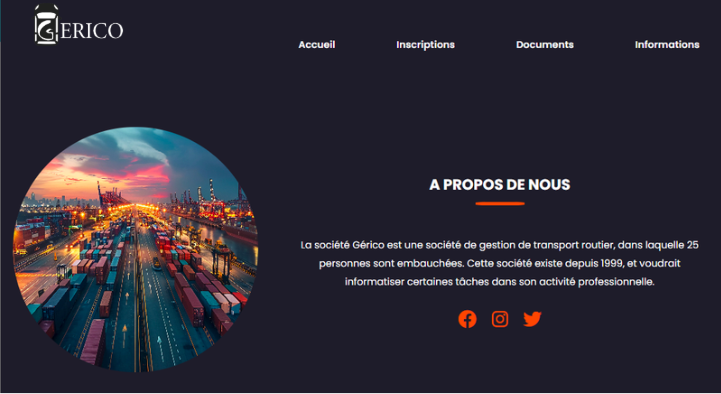

Étudiant en deuxième année de BUT Informatique à l’IUT d’Amiens, parcours Administration, Gestion et Exploitation des Données. Intéressé par la gestion et l’exploitation des données, je possède de solides compétences en SQL, ainsi qu’une bonne maîtrise des outils liés au traitement et à la visualisation des données
Universitée technologie d'Amiens
spécialisé en administration, gestion et exploitation des données
A propos de moi
Je suis une personne curieuse, rigoureuse et motivée, toujours prête à apprendre et relever de nouveaux défis. J’accorde une grande importance à l’esprit d’équipe, à la transparence et à l’intégrité dans mon travail
Base de communication : communication orale et écrite
Logiciel de conception graphique : Photoshop, Illustrator
Outils de communication en ligne : réseaux sociaux, outils collaboratifs
Développement web : HTML, CSS, PHP, JavaScript
Gestion de bases de données : SQL, PL/SQL
2024 - Assistant Administratif : Participation à la mise en place d’un logiciel de suivi technique, gestion des appels locataires, suivi de relogements via un outil interne, et traitement administratif de documents.
2023 - Préparateur de commande : rangement en zone de stockage, réception et contrôle des marchandises, préparation et constitution des commandes.
2023 - Lycée Pro : BAC Pro SN option RISC
2021 - Brevet : Mention Bien
Faiblesse : Un de mes défauts est que je suis parfois trop pressé, ce qui peut me pousser à vouloir terminer certaines tâches rapidement. J’apprends à mieux gérer mon temps et à accorder l’attention nécessaire à chaque étape pour garantir un travail de qualité.
Qualités : rigueur, curiosité, esprit d’équipe, bonne capacité d’adaptation, sens de l’organisation et motivation constante pour apprendre.
Projet

Conception d'une Base de donnée
J’ai conçu et géré une base de données pour un site permettant aux employés de consulter leurs fiches de paie et de faire des demandes de congés en ligne
Afficher le projet
Projet : Bot Discord personnel
Développer un bot Discord personnalisé qui interagit avec les utilisateurs d’un serveur. Il peut répondre à des commandes, modérer des discussions, jouer de la musique, envoyer des rappels, etc.
Afficher le projet

Site web de gestion des fiches de paie et des congés.
Création d’un site sécurisé où les employés peuvent consulter, télécharger et imprimer leurs fiches de paie. Ils peuvent aussi faire leurs demandes de congés en ligne en choisissant les jours ouvrés, avec gestion automatique des jours fériés et week-ends.
Afficher le projet
×
Expérience 1 : Mise en place d’un logiciel de suivi technique (Association AMLI)
J’ai contribué à la création des accès utilisateurs, accompagné les collaborateurs dans la prise en main du logiciel et rédigé une note de présentation. Ce projet a amélioré le suivi des interventions techniques et la communication interne, développant ainsi mes compétences en gestion de projet et relationnel.
Expérience 2 : Gestion logistique chez FM LOGISTIC
J’ai participé au rangement des produits, à la réception et au contrôle des marchandises, ainsi qu’à la préparation des commandes. Cette expérience m’a permis de mieux comprendre la chaîne logistique, tout en renforçant mon sens de l’organisation et mon travail en équipe.
Réflexion sur mes acquis
Ces expériences m’ont permis d’acquérir des compétences clés en communication, gestion de projet et organisation, en adéquation avec les attentes de mon cursus et de mon futur métier. J’ai surmonté des difficultés liées à l’adaptation aux outils et processus internes, renforçant ainsi mon autonomie et ma capacité d’adaptation.
J’ai également innové en proposant des améliorations dans le suivi des interventions et en facilitant la communication entre équipes. Ces missions m’ont offert une meilleure compréhension des parcours professionnels et métiers liés à la gestion technique et logistique, enrichissant ma vision globale du secteur.